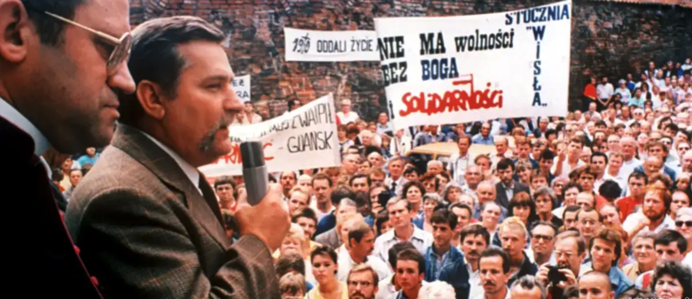

In his foundational framework on global history, historian Dane Kennedy breaks down the transition from a world of empires to nation-states into distinct periods. While he explicitly details three primary historical waves in his book Decolonization: A Very Short Introduction, he argues that a fourth wave of decolonization can be identified through the collapse of the Soviet Union

The fourth wave is about
the restoration of independence of Baltic nations,
the restoration of full sovereignty of the nations of Eastern Europe: Poland, Czechia, Slovakia, Hungary, etc.,
the dissolution of Yugoslavia,
the restoration of independence of the nations in Southern Caucasus